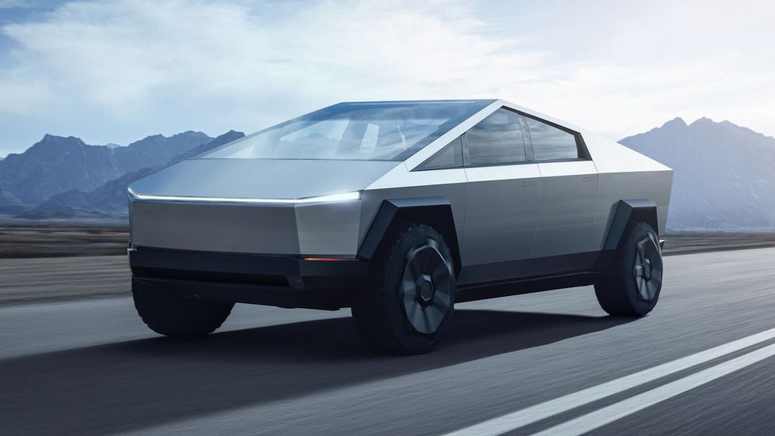

South Korean firm wins $300 million Tesla Cybertruck parts supply contract
Drive Tesla🇨🇦
@DriveTeslaca · May 5

driveteslacanada.ca
South Korean firm wins $300 million Tesla Cybertruck parts supply...
Tesla is getting closer and closer to the start of Cybertruck production, and when it does some of the parts that will go into...